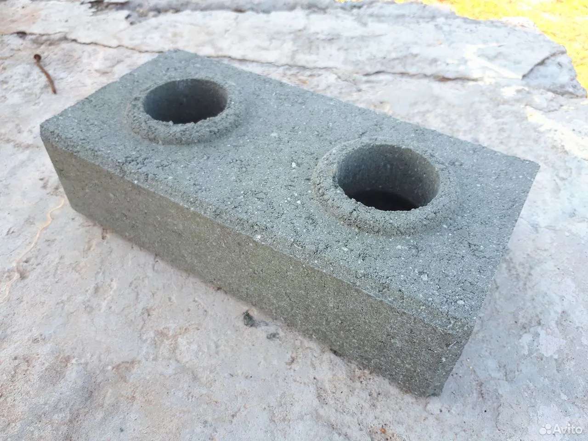

Что мы делаем?
Представляем новинку — гиперпрочный «LEGO-кирпич» — наилучшее решение в сфере монолитного строительства.
За последние годы мы смогли совершить производство гиперпрочного кирпича, опережающего свои аналоги по всем
ключевым параметрам.
Преимущества
-

Ровная стена.
У каждого Lego кирпича есть свои направляющие, которые позволяют каждому новому кирпичу быть на своем месте.
-

Раствор не нужен.
«LEGO- кирпич» можно складывать, не скрепляя вообще ничем. Но для прочности возводимой конструкции кирпичи сажают на клей.
-

Удобно для коммуникаций
Благодаря техническим отверстиям решается задача прокладывания коммуникаций.
-

Можно не штукатурить
Стены получаются гладкими и ровными. Достаточно будет только зашпаклевать и закончить эстетическим оформлением: покрасить или наклеить обои.
Наша продукция
-
Серый Кирпич17 рублей
-
Цветной кирпич20 рублей
-
Ваш цвет17 рублей